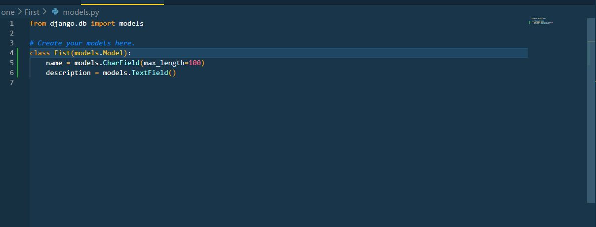
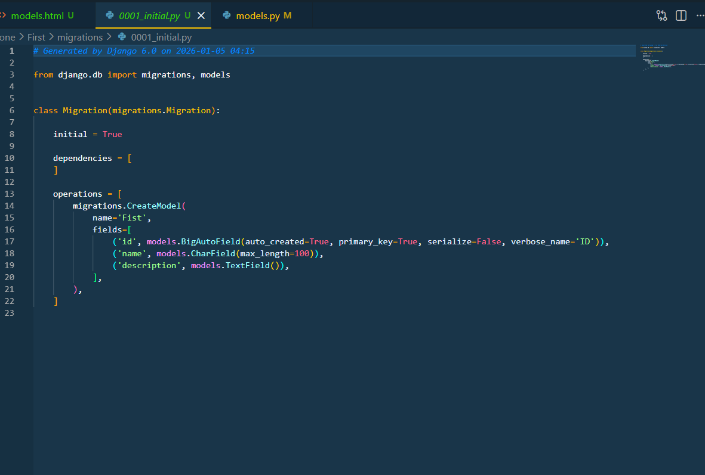
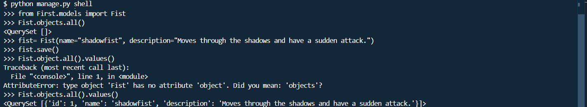
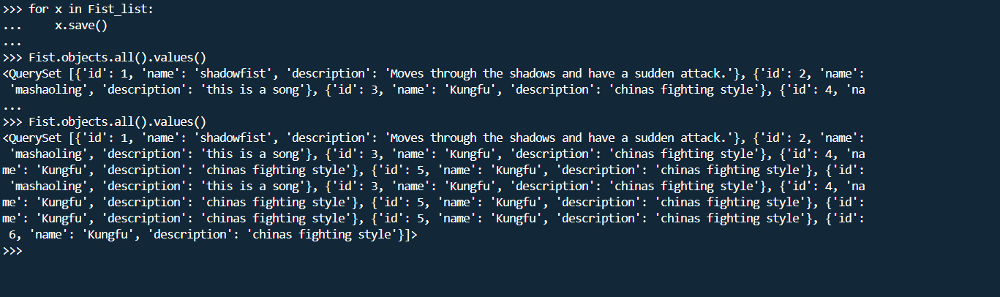
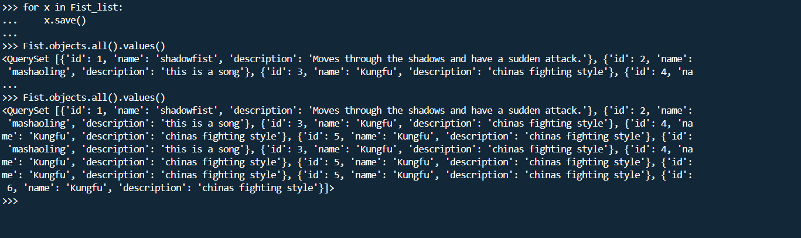
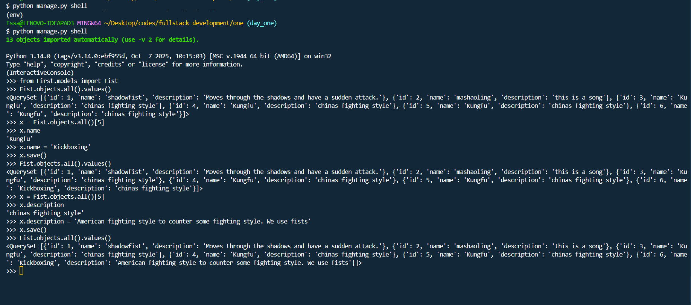
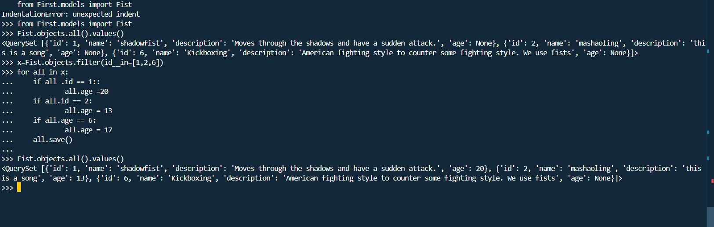

To create models, one must create the application then go to the models.py file in the app folder. To create the application see the frame below
Define a class that inherits from models.Model. Our class we will name it Fist
Add fields to the model class. In our case we will use a charfield for the name and a text field for the description. See the image below
Run migrations to create the database tables. We will input the code below to runmigrations for the models created and any other migrations
python manage.py makemigrations
python manage.py migrateThe makemigrations command creates new migration files based on the changes detected to your models. The migrate command applies those migrations to the database, creating or modifying tables as needed.

to view the model go to the migrations to see it
to view the migrations via the terminal write the code below
python manage.py showmigrationsNow we are done with creating models and making migrations
We now want to view the data of the models in the database. The data are usually saved in the database tables created by the migrations. This can be viewed in the blank db.sql3 database that come when you install django
TTo view the data, you can use the Django shell or a database browser tool. so lets use the django shell. Write the code below in the terminal
python manage.py sqlmigrate First 0001To insert data into models, you can use the Django shell or create views and forms. Here, we will demonstrate how to insert data using the Django shell. Follow these steps:
Open the Django shell by running the following command in your terminal:
python manage.py shellOnce inside the shell, import your model to create a querry set:
from First.models import YourModel(Fist)
YourModel(Fist).objects.all()create data inside by doing the following after seeing the querryset
fist= Fist(name="shadowfist", description="Moves through the shadows and have a sudden attack.")Save the data to the database by calling the save() method on the instance:
fist.save()You can check the model by pressing :Yourmodelname(fist).objects.all().values()
This will show you your data
For practice purposes you can create multiple data and enter before saving. Look at the example below
We have done minor errors so you can see how to identify error and fix them
 

you tend to see repeartings but this happens for saving purposes
Exit the shell by typing:
exit()You have successfully inserted data into your model!
To update data in your model, you can use the Django shell or create views and forms. Here, we will demonstrate how to update data using the Django shell:
Open the Django shell by running the following command in your terminal:
python manage.py shellOnce inside the shell, import your model:
from First.models import FistSelect the specific instance you want to update:
fist = Fist.objects.get(name="shadowfist")Update the fields of that instance:
fist.description = "Moves through shadows and has a sudden attack.Played in Nigeria"Save the changes to the database:
fist.save()In the example below you will see i haverelayed the previous data of the last input , then changed the name, then relayed the data, then changed the description and finally relayed the data again. You can update anything you wish from here
To delete data from your model, you can use the Django shell or create views and forms. Here, we will demonstrate how to delete data using the Django shell:
Open the Django shell by running the following command in your terminal:
python manage.py shellOnce inside the shell, import your model:
from First.models import FistSelect the specific instance you want to delete:
x = Fist.objects.all()[2]Delete the instance from the database:
x.delete()In the example below you will see i haverelayed the previous data of the last input , then deleted the data, then relayed the data again to see it has been deleted
Deleting multiple data you do this. Filter the ids
Fist.objects.filter(id__in=[3, 4]).delete()
You will notice that i first call the objects so that you can see them all then i delete then i call them so that you can see the remaining objects.
To update models, you need to make changes to the model class in models.py file, then create and apply new migrations. Here are the steps to update a model:
From the process of creating models, we add more models.
Make changes to the model class in models.py file. For example, you can add a new field, modify an existing field, or delete a field. Let's say we want to add a new field called "age" to the Fist model. Remember age is an integer field.
Create new migration files to reflect the changes made to the model. Run the following command in the terminal:
python manage.py makemigrationsApply the new migrations to the database by running the following command:
python manage.py migrateAfter running these commands, the database schema will be updated to reflect the changes made to the model. You can verify the changes by checking the database or using the Django shell to inspect the model.

Afterwards you can try inserting valures and updating values
We have come to the end of the lesson
if you have any question please contact me via the link below
Contact Me